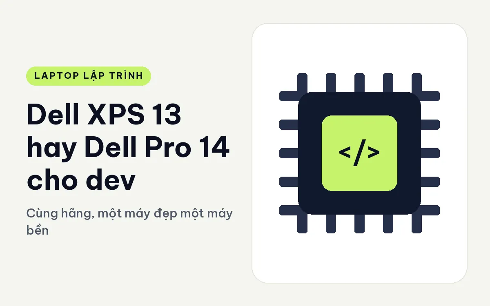
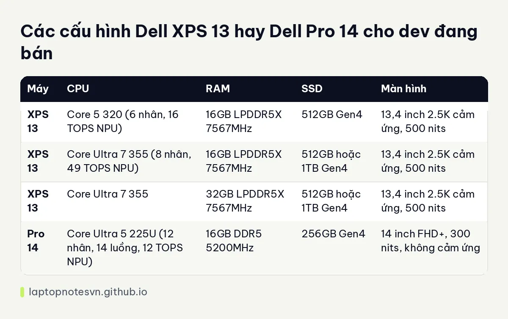

Dell XPS 13 hay Dell Pro 14 cho dev - Cùng hãng, một máy đẹp một máy bền

Cùng một hãng, cùng nhắm tới người dùng văn phòng, nhưng XPS 13 và Pro 14 đại diện cho hai triết lý khác nhau. XPS theo đuổi mỏng nhẹ, màn đẹp, kiểu máy dành cho người dùng cá nhân thích thiết kế. Pro 14 là dòng doanh nghiệp, ưu tiên cổng đầy đủ và độ bền. Dev chọn giữa hai máy thường đang cân nhắc giữa vẻ ngoài và tính thực dụng.
Một bên là Dell XPS 13 DX13260.
Bên còn lại là Dell Pro 14 PC14250.
Thiết kế Dell XPS 13 đặt cạnh Dell Pro 14
XPS 13 dày 12,7 mm, nặng khoảng 0,9 kg, pin 52Wh, màn 13,4 inch. Pro 14 dày 18,89 đến 20,37 mm, nặng 1,35 kg, pin 55Wh, màn 14 inch. XPS nhẹ hơn khoảng 450 gam, đó là điểm cực lớn nếu bạn mang máy hằng ngày. Đổi lại, Pro 14 có màn lớn hơn một chút và pin nhỉnh hơn.
Sự khác biệt rõ nhất nằm ở cổng. Pro 14 có Thunderbolt 4, HDMI 2.1 và RJ45, đủ để cắm dây mạng và màn ngoài mà không cần hub. XPS 13 mỏng đến mức bản Core 5 320 chỉ có cổng USB-C thường, còn bản Core Ultra 7 355 có 2 cổng Thunderbolt 4. Nếu bạn hay ngồi trong phòng họp hoặc phòng server cần dây mạng, Pro 14 tiện hơn hẳn.
Về RAM, XPS 13 dùng LPDDR5X hàn trên bo mạch, không nâng cấp. Pro 14 dùng DDR5 5200MHz. Dữ liệu không nói rõ DDR5 của Pro 14 có thay được hay không, nên bạn cần xác nhận nếu có ý định nâng cấp. Điều chắc chắn là XPS không nâng được RAM.
Thông số các phiên bản còn hàng
| Máy | CPU | RAM | SSD | Màn hình |
|---|---|---|---|---|
| XPS 13 | Core 5 320 (6 nhân, 16 TOPS NPU) | 16GB LPDDR5X 7567MHz | 512GB Gen4 | 13,4 inch 2.5K cảm ứng, 500 nits |
| XPS 13 | Core Ultra 7 355 (8 nhân, 49 TOPS NPU) | 16GB LPDDR5X 7567MHz | 512GB hoặc 1TB Gen4 | 13,4 inch 2.5K cảm ứng, 500 nits |
| XPS 13 | Core Ultra 7 355 | 32GB LPDDR5X 7567MHz | 512GB hoặc 1TB Gen4 | 13,4 inch 2.5K cảm ứng, 500 nits |
| Pro 14 | Core Ultra 5 225U (12 nhân, 14 luồng, 12 TOPS NPU) | 16GB DDR5 5200MHz | 256GB Gen4 | 14 inch FHD+, 300 nits, không cảm ứng |
XPS 13 có nhiều lựa chọn hơn hẳn: nhiều bản, từ 16GB đến 32GB RAM, từ 512GB đến 1TB SSD. Pro 14 chỉ có một bản với 16GB RAM và 256GB SSD. Đối với dev, SSD 256GB là cấu hình hơi chật: nhiều bộ công cụ cùng image Docker sẽ khiến nó đầy nhanh. XPS 13 với 1TB và 32GB RAM thoải mái hơn nhiều, dù RAM không nâng được.

Nhìn vào CPU, Pro 14 có 12 nhân vật lý nghe áp đảo hơn 8 nhân của XPS Core Ultra 7 355. Thực tế Pro 14 dùng chip dòng U có lõi hiệu suất thấp và lõi tiết kiệm trộn lẫn, còn XPS 13 Core Ultra 7 355 là chip có NPU 49 TOPS. Hai loại CPU khác thế hệ nên đừng chỉ so số nhân. Hãy chọn theo công việc: nếu bạn build nhiều, hãy thử máy thật.
Khi chọn dung lượng, bài lập trình viên cần bao nhiêu RAM cho bạn khung tham khảo.
Đặt hai máy vào việc code thật
- Dev di chuyển nhiều: XPS 13 nhẹ hơn 450 gam.
- Dev cần dây mạng, cắm màn hình, dock: Pro 14 có sẵn RJ45 và Thunderbolt 4.
- Dev dùng Docker: XPS 13 bản 32GB, hoặc cân nhắc máy khác nếu cần nhiều hơn.
- Dev dùng máy ở môi trường doanh nghiệp: Pro 14 thuộc dòng doanh nghiệp, hợp quy trình quản lý của IT.
Bảo mật, quản lý và môi trường công ty
Pro 14 thuộc dòng doanh nghiệp, tức là hướng tới những tổ chức cần triển khai nhiều máy cùng lúc và quản lý tập trung. Với freelancer hay sinh viên, những tính năng đó ít khi dùng đến. Với dev trong công ty có phòng IT, máy dòng doanh nghiệp thường dễ được duyệt mua và hỗ trợ hơn.
XPS 13 hướng tới người dùng cá nhân. Màn cảm ứng 2.5K, đủ phủ 100% DCI-P3 và có lớp Eyesafe, hợp người làm việc lâu trước màn hình. Nhưng nếu công ty yêu cầu máy theo danh sách chuẩn, XPS có thể không nằm trong danh sách.
Hãy hỏi trước IT của công ty trước khi mua, vì đây là câu hỏi tránh được phiền phức nhất.
Một điểm nữa: XPS 13 có hai tùy chọn Core Ultra 7 355 với 16GB hoặc 32GB RAM, nên bạn chọn được đúng dung lượng ngay lúc mua, vì RAM hàn không thay sau này. Hãy ước lượng nhu cầu cho hai đến ba năm tới chứ đừng chỉ tính cho hôm nay.
Quyết định cuối cho người code
Chọn XPS 13 nếu bạn ưu tiên nhẹ, màn cảm ứng đẹp và có nhiều cấu hình để chọn, chấp nhận ít cổng. Bài XPS 13 cho lập trình nói thêm về từng bản.
Chọn Pro 14 nếu cần RJ45, Thunderbolt 4 trên máy giá mềm và muốn dòng máy doanh nghiệp. Hãy chú ý SSD 256GB, bạn có thể phải nâng ổ sớm.
Một lời khuyên: nếu bạn không rõ chọn gì, hãy đặt hai máy cạnh nhau trong tay và so cảm giác nhấc lên. Người cầm máy hằng ngày thường nhận ra khác biệt 450 gam ngay lập tức.
Đăng ngày 09/11/2026